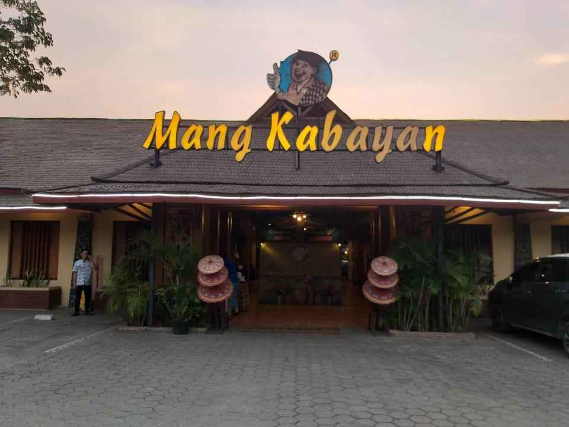

Daftar Wisata Kuliner Kota Depok

LEARN MORE
Mang Kabayan
Rumah makan yang bertemakan khas sunda yang di jamin membuat lidah anda bergoyang hahaha

Soto Bu Tjondro
Buat anda yang suka dengan kuliner soto, warung bu tjondro ini harus masuk dalam daftar kuliner yang anda cobain.